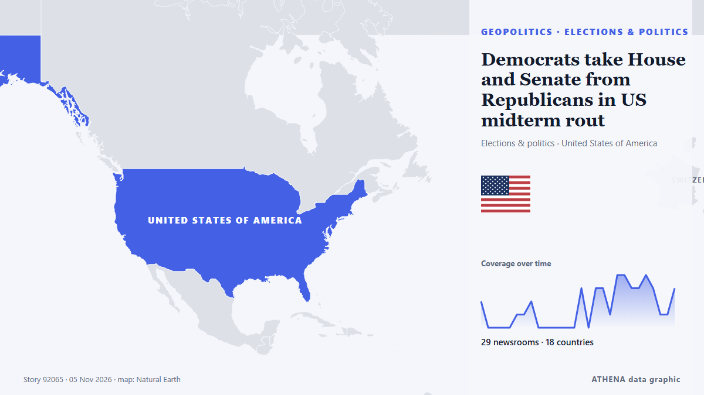

Democrats take House and Senate from Republicans in US midterm rout

Democrats will control both chambers of Congress after flipping seats in Republican strongholds across the US in an election seen as a repudiation of President Donald Trump. من DW English
نشرته بشكل مستقل 29 مصدرًا في 18 دولة منذ 1 نوفمبر، وأول من نشره Al Jazeera English؛ والتغطية تتراجع. يقدّر ATHENA الخطر بأنه منخفض (1.2/10)، ويعود ذلك أساسًا إلى خطورة الضرر الموصوف ونطاقه الجغرافي والقطاعي. الثقة 89٪ (مرتفعة)، وعدد المصادر المستقلة المؤكِّدة: 29، بمتوسط موثوقية للمصادر يبلغ 72٪. وسائل الإعلام حسب البلد: الولايات المتحدة (13), الهند (5), المملكة المتحدة (4). التغطية: من 1 نوفمبر إلى 4 نوفمبر، 81 ساعة.
لماذا يهم: قد تغيّر التطورات الأمنية والدبلوماسية التحالفات والتجارة والأسواق إلى ما هو أبعد بكثير من الدول المعنية مباشرة.
ما الذي تغيّر: 24 تقارير جديدة من 20 غرف أخبار خلال 24 ساعة حتى 5 نوفمبر.
العنوان الأول: US midterms live: Last-ditch efforts ahead of Tuesday’s elections
تُعرض العناوين بالإنجليزية كما نُشرت.
نظرة سريعة
اختير وقُيِّم وكُتب وفق منهجية ATHENA المنشورة. لا يتدخل أي محرر في الأحداث بعينها. كيف يُنتَج ›
| 01 Nov 13:42 UTC | 2 |
|---|---|
| 01 Nov 16:42 UTC | 0 |
| 01 Nov 19:42 UTC | 0 |
| 01 Nov 22:42 UTC | 0 |
| 02 Nov 01:42 UTC | 0 |
| 02 Nov 04:42 UTC | 1 |
| 02 Nov 07:42 UTC | 1 |
| 02 Nov 10:42 UTC | 2 |
| 02 Nov 13:42 UTC | 0 |
| 02 Nov 16:42 UTC | 0 |
| 02 Nov 19:42 UTC | 0 |
| 02 Nov 22:42 UTC | 0 |
| 03 Nov 01:42 UTC | 0 |
| 03 Nov 04:42 UTC | 0 |
| 03 Nov 07:42 UTC | 3 |
| 03 Nov 10:42 UTC | 0 |
| 03 Nov 13:42 UTC | 3 |
| 03 Nov 16:42 UTC | 3 |
| 03 Nov 19:42 UTC | 1 |
| 03 Nov 22:42 UTC | 4 |
| 04 Nov 01:42 UTC | 4 |
| 04 Nov 04:42 UTC | 3 |
| 04 Nov 07:42 UTC | 3 |
| 04 Nov 10:42 UTC | 4 |
| 04 Nov 13:42 UTC | 3 |
| 04 Nov 16:42 UTC | 1 |
| 04 Nov 19:42 UTC | 1 |
| 04 Nov 22:42 UTC | 3 |
| 01 Nov 14:43 UTC | 0.0 |
|---|---|
| 02 Nov 11:35 UTC | 0.7 |
| 05 Nov 00:09 UTC | 1.2 |
لماذا هذه الأرقام
الأهمية
الخطر
الثقة
التغطية — من نشر الخبر ومتى
العنوان كما نُشر · يفتح الأصل- Al Jazeera English · قطرUS midterms live: Democrat Stevens endorses el-Sayed’s rival in Senate race
- MercoPress · أورغوايDemocrats seek to retake Congress in Tuesday’s US midterm elections
- The Namibian · ناميبياDemocrats have high hopes for midterms, but polls have let them down before
- Al Jazeera English · قطرHow the president’s party has fared in every US midterm election since 1946
- Livemint · الهندUS Midterms: Can Democrats win back the Senate? Polls show party ahead in 5 GOP-held battleground seats
- Fast Company · الولايات المتحدةThis election forecast tool updates every 10 minutes. Here’s what it’s predicting about Democrats’ chances
- PBS NewsHour · الولايات المتحدةLive Results: Minnesota Senate midterm election
- PBS NewsHour · الولايات المتحدةLive Results: Iowa Senate midterm election
- PBS NewsHour · الولايات المتحدةLive Results: Kansas Senate midterm election
- PBS NewsHour · الولايات المتحدةLive Results: Michigan Senate midterm election
- PBS NewsHour · الولايات المتحدةLive Results: Nebraska Senate midterm election
- PBS NewsHour · الولايات المتحدةLive Results: Florida Senate midterm election
- The Block · الولايات المتحدةPrediction markets bet on Democratic sweep of House, Senate in midterm elections
- ABC News Australia · أسترالياSee live results from the 2026 US midterm elections
- Cointelegraph · الولايات المتحدةUS midterms: Prediction markets favor Democrats in key crypto races
- The Canadian Press (via CityNews) · كنداKey Senate races to watch in the U.S. midterms
- The Straits Times · سنغافورةPrediction markets face US midterms test as election bets soar
- The Independent · المملكة المتحدةUS midterm election latest predictions: Democrats’ set to sweep Congress as key seats flipped
- The Independent · المملكة المتحدةMidterms elections 2026: Live results maps on Senate and House races
- Livemint · الهندUS Midterm Election Result 2026 LIVE: Trump's declining popularity, rising prices hurt GOP in US midterms, poll finds
- Livemint · الهندUS midterm election results prediction: What betting market, exit polls reveal — Democrats have ‘100% chance of winning’
- Nikkei Asia · اليابانUS midterms live: Democrats notch second Senate pickup
- IOL · جنوب أفريقياTrump says he will accept the results of the US midterm elections: NY Times
- Al Jazeera English · قطرDemocratic Party wins US Senate in 2026 midterm elections
- Ukrainska Pravda (English) · أوكرانياTrump loses majority in the Senate
- Khaama Press · أفغانستانDemocrats Win US Senate Majority After Historic Midterm Gains
- DW English · ألمانياUS midterm election results: Democrats flip House and Senate. Here's what else the data tell us
- TRT World · تركياDemocrats sweep both House and Senate
- The Independent · المملكة المتحدةMidterm election results so far: Live maps and graphs as Democrats seal huge victory
- Haaretz (English) · إسرائيلDemocrats retake House and Senate in stunning midterm upset: Follow the results live
- The Local Switzerland · سويسراHow could the outcome of US midterm elections impact Switzerland?
- Indian Express · الهندUS midterm election results 2026: Check state Senate and House winners, party-wise tally
- The Guardian · المملكة المتحدةUS midterm elections 2026: live results from Senate, House and governor races in all 50 states
- The National · الإمارات العربية المتحدةUS midterms 2026: As Democrats take the House and the Senate, what comes next?
- Livemint · الهندUS midterm election results: Democrats clinch huge wins on inflation anger, Trump fatigue
- CleanTechnica · الولايات المتحدةSierra Club Response to Midterm Election Results
- Forbes Business · الولايات المتحدةMidterm Election Results (Live Updates): Democrats Sweep House And Senate, Some Races Still Too Close To Call
- MIT Technology Review · الولايات المتحدةWhat’s next for US energy policy after the midterm elections?
- Deadline · الولايات المتحدةWhat Stood Out In Media Coverage Of Democrats’ Rout Of Trump & Republicans In Midterm Elections
- DW English · ألمانياDemocrats take House and Senate from Republicans in US midterm rout